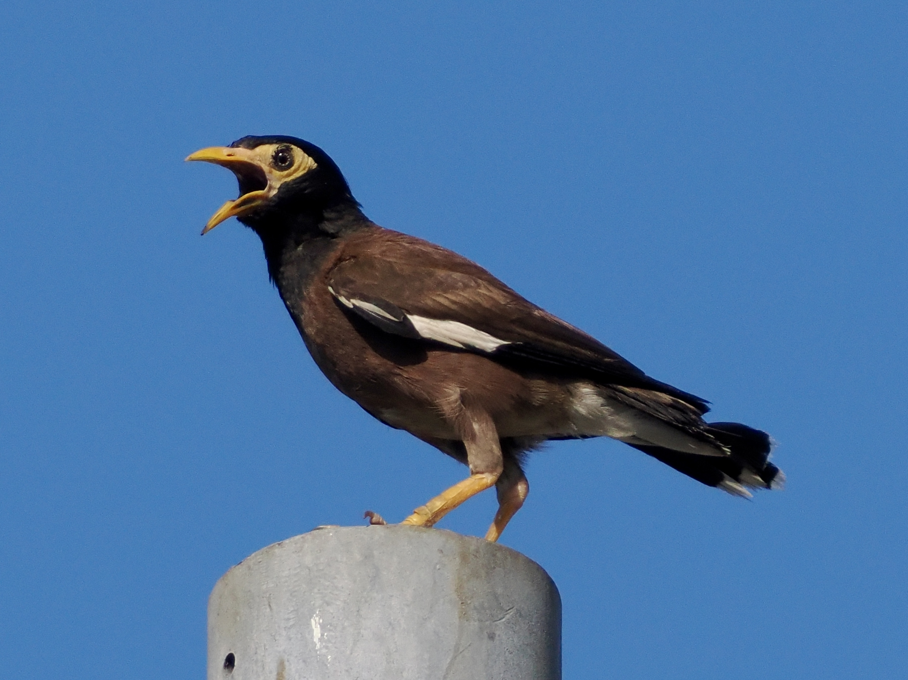

Common Myna
Acridotheres tristis
Order: Passeriformes
Family: Sturnidae

A black myna with a brown back and yellow skin around the eyes. The HK population seems to have descended from captive origins.
Similar species
Crested Myna- Black back (vs brown back)
- No yellow skin around the eyes
- Crest on the base of the bill (vs no crest)